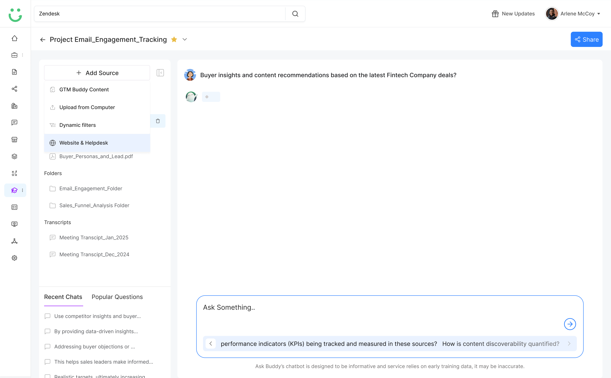
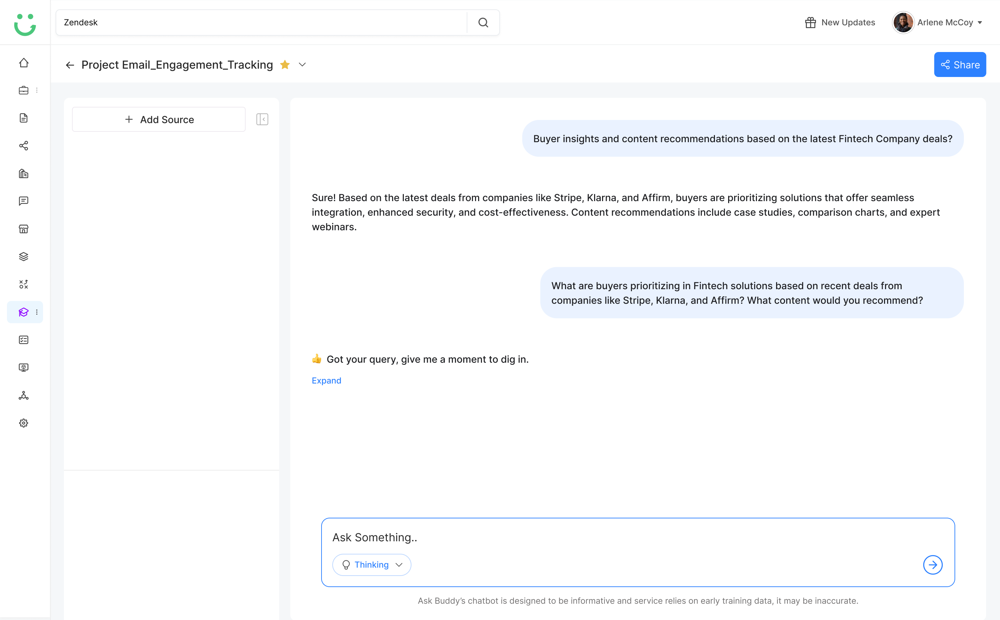
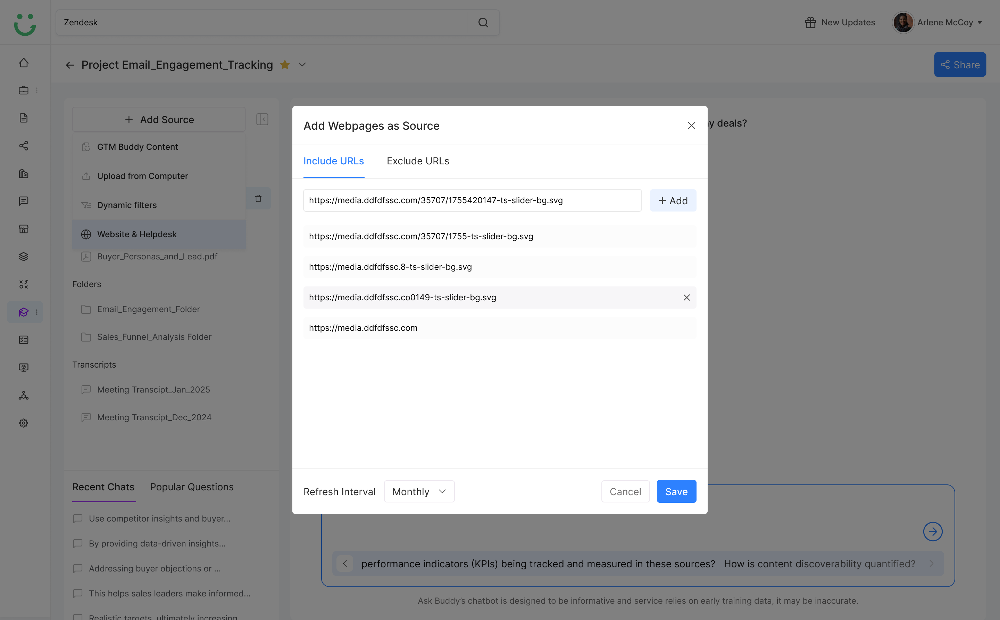
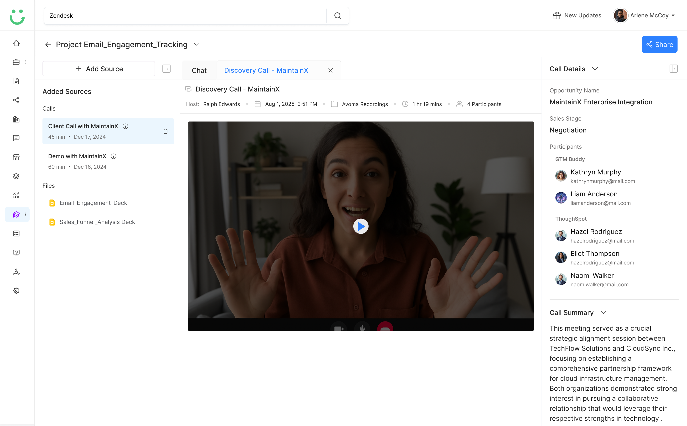

Ask Buddy Entry Point
Design Decisions
Solving the Hard Problems
01
Prompt Starters Before Blank Input
A blank chat box can feel unclear, so I added suggested prompts for common sales moments. This helped reps understand what Ask Buddy could do and start faster without having to figure out the right question.

02
Guidance Inside the Workflow
Instead of making reps search another content library, Ask Buddy was designed to sit close to sales tasks like emails, calls, and deal updates. The goal was to reduce switching and keep reps moving without ever leaving their context.

03
Contextual Answers, Not Generic AI Copy
Ask Buddy needed to respond with deal-aware guidance, not generic AI output. I prioritized buyer context, content sources, objections, and sales stage to make answers more usable and closer to what reps would actually send.

04
One Workspace: Sources, Chat, and Agents
The desktop layout keeps Sources on the left, the conversation in the center, and Popular Agents on the right. Reps can see where an answer comes from and act on it without switching context, so guidance stays fast but grounded.

05
Content Trust Signals
Because reps worried about outdated content, the experience needed to show where answers came from and whether the source was approved or current. Transparency about sources made the AI feel more trustworthy, not less.

06
Knowledge Capture as a Byproduct
Repeated rep questions were not just support requests. I treated them as signals to identify content gaps, generate FAQs, and improve enablement over time - turning daily usage into a knowledge engine for the team.

07
Manager Visibility Without Micromanagement
Managers needed to understand what reps were struggling with, but not review every interaction. I designed insights around patterns, gaps, and recurring questions - not individual chat logs - so the view felt like coaching, not surveillance.